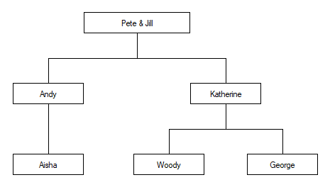

Fix Script {R}←{X}⎕FIX Y
{R}←{X}⎕FIX Y⎕FIX establishes Namespaces, Classes, Interfaces and functions from the script specified by Y in the workspace.
In this section, the term namespace covers scripted Namespaces, Classes and Interfaces.
Y may be a simple character vector, or a vector of character vectors or character scalars. The value of X determines what Y may contain.
If Y is a simple character vector, it must start with file://, followed by the name of a file which must exist. The contents of the file must follow the same rules that apply to Y when Y is a vector of character vectors or scalars. The file name can be relative or absolute; when considering cross-platform portability, using "/" as the directory delimiter is recommended, although "\" is also valid under Windows.
If specified, X must be a numeric scalar. It may currently take the value 0, 1 or 2. If not specified, the value is assumed to be 1.
If X is 0, Y must specify a single valid namespace which may or may not be named, or a file containing such a definition. If so, the shy result R contains a reference to the namespace. Even if the namespace is named, it is not established per se, although it will exist for as long as at least one reference to it exists.
If X is 1, Y must specify a single valid namespace which may or may not be named, or a file containing such a definition. If so, the shy result R contains a reference to the namespace. If Y contains the definition of a named namespace, the namespace is established in the workspace.
If X is 2, Y is either a character vector containing the name of a script file, or a vector of character vectors that represents a script.
Y may specify a series of named namespaces or function definitions, or a combination of functions and namespaces.
- If the script contains more than one item, tradfn definitions must be delimited by
∇symbols. - Derived and assigned functions may be specified only within namespaces.
In this case, the shy result R is a vector of character vectors, containing the names of all of the objects that have been established in the workspace; the order of the names in R is not defined. Currently 2 ⎕FIX is not certain to be an atomic operation, although this might change in future versions.
Example 1
In the first example, the Class specified by Y is named (MyClass) but the result of ⎕FIX is discarded. The end-result is that MyClass is established in the workspace as a Class.
⎕←⎕FIX ':Class MyClass' ':EndClass'
#.MyClassExample 2
In the second example, the Class specified by Y is named (MyClass) and the result of ⎕FIX is assigned to a different name (MYREF). The end-result is that a Class named MyClass is established in the workspace, and MYREF is a reference to it.
MYREF←⎕FIX ':Class MyClass' ':EndClass'
)CLASSES
MyClass MYREF
⎕NC'MyClass' 'MYREF'
9.4 9.4
MYREF
#.MyClass
MYREF≡MyClass
1Example 3
In the third example, the left-argument of 0 causes the named Class MyClass to be visible only via the reference to it (MYREF). It is there, but hidden.
MYREF←0 ⎕FIX ':Class MyClass' ':EndClass'
)CLASSES
MYREF
MYREF
#.MyClassExample 4
The fourth example illustrates the use of un-named Classes.
src←':Class' '∇Make n'
src,←'Access Public' 'Implements Constructor'
src,←'⎕DF n' '∇' ':EndClass'
MYREF←⎕FIX src
)CLASSES
MYREF
MYINST←⎕NEW MYREF'Pete'
MYINST
PeteExample 5
In the final example, the left argument of 2 allows a script containing multiple objects to be fixed:
src←':Namespace andys' '∇foo' '2' '∇'
src,←':EndNamespace' 'dfn←{⍺ ⍵}' '∇r←tfn'
src,←'r←33' '∇' ':Class c1' '∇goo' '1'
src,←'∇' ':EndClass'
≢⎕←2⎕FIX src
c1 tfn dfn andys
4Restriction
⎕FIX is unable to fix a namespace from Y when Y specifies a multi-line dfn which is preceded by a ⋄ (diamond separator).
⎕FIX':Namespace iaK' 'a←1 ⋄ adfn←{' '⍵' ' }' ':EndNamespace'
DOMAIN ERROR: There were errors processing the script
⎕FIX':Namespace iaK' 'a←1 ⋄ adfn←{' '⍵' ' }' ':EndNamespace'
∧Variant Options
⎕FIX may be applied using the variant operator with the options Quiet, FixWithErrors, AllowLateBinding and InjectReferences. These options apply only to namespaces and classes specified by the script. There is no principal option.
Quiet Option
0 |
If the script contains errors, these are displayed in the Status Window. |
1 |
If the script contains errors, the errors are not shown in the Status Window. |
FixWithErrors Option
0 |
If the script contains errors, ⎕FIX fails with DOMAIN ERROR. |
1 |
⎕FIX fixes all the namespaces and classes in the script regardless of any errors they may contain. |
2 |
If the script contains errors, ⎕FIX displays a message box prompting the user to choose whether or not to fix all the offending namespaces and classes in the script. |
AllowLateBinding Option
0 |
⎕FIX will only fix a Class whose Base class (if specified) is defined in the script or is present in the workspace. |
1 |
⎕FIX will fixes a Class whose Base class is neither defined in the script nor present in the workspace. |
InjectReferences Option
'All' |
In order to implement lexical scope, ⎕FIX will insert internal references into all objects in the script. |
'InClasses' |
In order to implement lexical scope, ⎕FIX will insert internal references ONLY into Classes and sub-classes in the script, but not into namespaces. |
'None' |
No internal references are inserted and lexical scope does not apply. |
The following examples illustrate how different values of the InjectReferences option affect the scope of objects in scripts. The examples are based on the following family tree:

Two scripts are defined to map this tree onto a structure of Classes and Namespaces. In this scheme, female family members are represented by Classes and male family members by Namespaces.
So the scripted tree for Pete has a parent Namespace:
:Namespace Pete
:Namespace Andy
:Class Aisha
:Access Public
:Endclass
:EndNamespace
:Class Katherine
:Access Public
:Namespace Woody
:EndNamespace
:Namespace George
:EndNamespace
:EndClass
:EndNamespaceWhile the scripted tree for Jill has a parent Class:
:Class Jill
:Access Public
:Namespace Andy
:Class Aisha
:Access Public
:Endclass
:EndNamespace
:Class Katherine
:Access Public
:Namespace Woody
:EndNamespace
:Namespace George
:EndNamespace
:EndClass
:EndClassUsing the Pete Namespace, after executing the expression:
2(⎕FIX⍠'InjectReferences' 'All')⎕SRC Pete- Code in
Petemay refer toAisha,Andy,George,Katherine, andWoody - Code in
Andymay refer toAishaandKatherine - ... and so forth.
But after executing:
2(⎕FIX⍠'InjectReferences' 'InClasses')⎕SRC Pete- Code in
Petemay refer only toAndyandKatherine - Code in
Andymay refer only toAisha - ... and so forth.
The following tables show which objects in Namespace Pete can see (that is, refer to) which other objects representing members of the family, in each case; All, InClasses and None.
| 'All' | Pete | Andy | Aisha | Katherine | Woody | George |
|---|---|---|---|---|---|---|
| Pete | ✔ | ✔ | ✔ | ✔ | ✔ | |
| Andy | ✔ | ✔ | ||||
| Aisha | ✔ | ✔ | ✔ | |||
| Katherine | ✔ | ✔ | ✔ | ✔ | ✔ | |
| Woody | ✔ | |||||
| George | ✔ |
| 'InClasses' | Pete | Andy | Aisha | Katherine | Woody | George |
|---|---|---|---|---|---|---|
| Pete | ✔ | ✔ | ||||
| Andy | ✔ | |||||
| Aisha | ✔ | ✔ | ✔ | |||
| Katherine | ✔ | ✔ | ✔ | ✔ | ✔ | |
| Woody | ||||||
| George |
| 'None' | Pete | Andy | Aisha | Katherine | Woody | George |
|---|---|---|---|---|---|---|
| Pete | ✔ | ✔ | ||||
| Andy | ✔ | |||||
| Aisha | ||||||
| Katherine | ||||||
| Woody | ||||||
| George |
Whilst the next set of tables show the same for Class Jill.
| 'All' | Jill | Andy | Aisha | Katherine | Woody | George |
|---|---|---|---|---|---|---|
| Jill | ✔ | ✔ | ✔ | ✔ | ✔ | ✔ |
| Andy | ✔ | ✔ | ||||
| Aisha | ✔ | ✔ | ✔ | |||
| Katherine | ✔ | ✔ | ✔ | ✔ | ✔ | |
| Woody | ✔ | |||||
| George | ✔ |
| 'InClasses' | Jill | Andy | Aisha | Katherine | Woody | George |
|---|---|---|---|---|---|---|
| Jill | ✔ | ✔ | ✔ | ✔ | ✔ | ✔ |
| Andy | ✔ | |||||
| Aisha | ✔ | ✔ | ✔ | |||
| Katherine | ✔ | ✔ | ✔ | ✔ | ✔ | |
| Woody | ||||||
| George |
| 'None' | Jill | Andy | Aisha | Katherine | Woody | George |
|---|---|---|---|---|---|---|
| Jill | ||||||
| Andy | ✔ | |||||
| Aisha | ||||||
| Katherine | ||||||
| Woody | ||||||
| George |